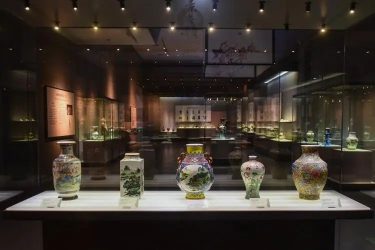
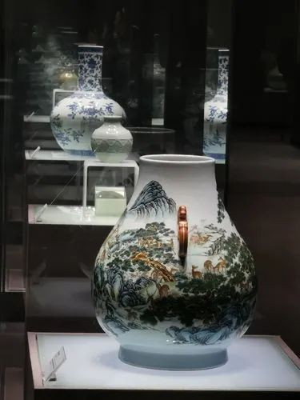
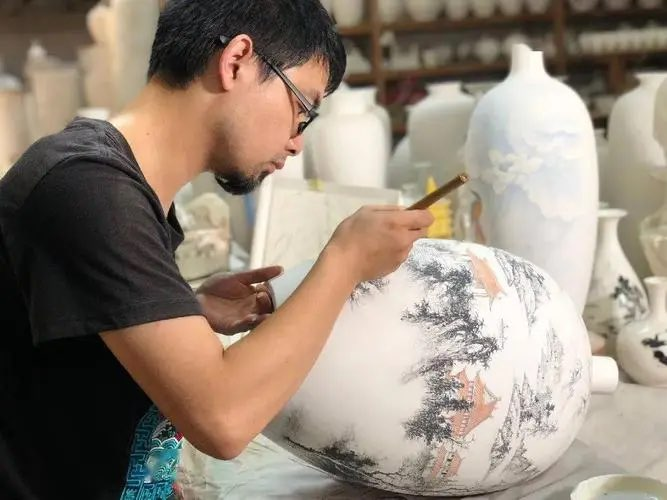

联系人：XXXX
电话：000-0000-0000

瓷器以其绚烂多彩的图案和精美的工艺，成为了中国古代文化的瑰宝。无论是精致的瓷碗、瓷盘、瓷壶还是瓷花瓶，都展现了中国传统的审美观念和艺术技艺。瓷器的图案涵盖了各种自然景物、人物故事、传统文化等，形式各异、精美绝伦，犹如一幅幅立体的画作。瓷器还注重形式的和谐、比例的优美，体现了中国古代文化中对和谐、均衡、中庸之道的追求。无论是青花瓷、五彩瓷、刻花瓷还是景泰蓝瓷，都是中国古代工匠们用心雕琢的艺术佳作，凝聚了千百年来的智慧和情感。
瓷器不仅在艺术上有着卓越的价值，同时也在科技和工艺上有着令人叹为观止的成就。中国古代的制瓷工艺独步天下，从原材料的选取、瓷土的精炼、胎的成型、烧制的掌握等方面，都体现了中国古代工匠们的智慧和技艺。特别是青瓷的烧制工艺，采用了高温还原的独特烧制方式，使得瓷器表面呈现出一层深邃的青色釉面，充分展现了中国古代陶瓷工艺的独特魅力。此外，中国古代还发明了众多的瓷器装饰技术，如青花、刻花、绘画、镂空等，使瓷器更加丰富多样，成为了世界陶瓷史上的一大创举。
作为中国古代的传统手工艺品，瓷器承载着丰富的历史内涵和文化传承。瓷器不仅作为贵族和宫廷用品，还作为日常生活用具，普及到了百姓家庭。瓷器在中国古代社会中起到了交流、沟通和文化传承的重要角色，是中华民族智慧和文明的结晶。瓷器作为国粹，不仅在中国本土有着深厚的影响，也对世界范围内的陶瓷制作产生了深远的影响。随着丝绸之路的开通，瓷器逐渐传入西方国家，成为了中外文化交流的桥梁。许多国家在欣赏和学习中国瓷器的同时，也从中汲取了灵感，发展出了自己的陶瓷工艺和文化。例如，日本的和田瓷、英国的万宝龙瓷器、法国的世界闻名的利摩日瓷器等，都受到了中国瓷器的深刻影响。
如今，瓷器依然在中国及世界各地传承和发展着。中国陶瓷之乡景德镇作为世界陶瓷之都，一直致力于保护和传承中国古代瓷器文化，举办各类陶瓷艺术展览和交流活动，推动着瓷器的传承和发展。同时，现代陶瓷艺术也在不断创新和发展，融入了现代艺术的元素，使瓷器在当代艺术舞台上焕发新的生命力。总的来说，瓷器作为国粹，是中国古代文化和艺术的杰出代表，凝聚了千百年来中国古代工匠们的智慧和技艺，具有丰富的历史内涵和文化价值。